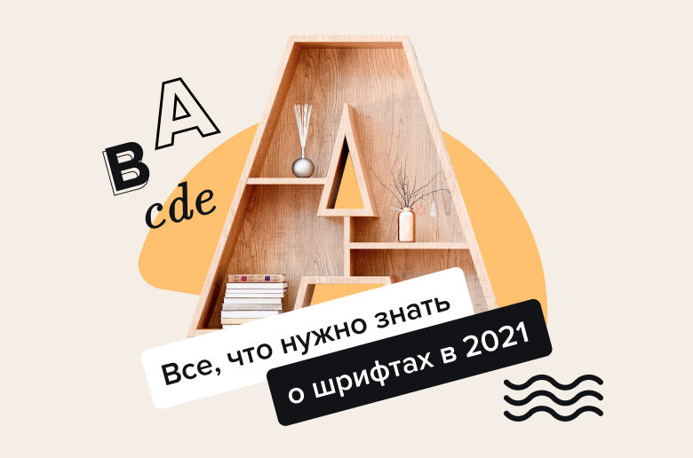

Создать дизайн в VistaCreate очень просто: выбираете фото или видео в высоком разрешении, накладываете несколько дизайн-элементов — и добавляете текст. И вот как раз тут важно не промахнуться: если взять шрифты, которые не сочетаются, вы вряд ли будете довольны результатом.
В медиатеке VistaCreate уже добавлено сотни бесплатных шрифтов на 20 языках. Если у вас есть шрифты, созданные или купленные специально для вашего бренда, можете загрузить их в VistaCreate и использовать в дизайне. Добавляйте шрифт в свои бренд-киты — пусть фирменные стили всегда будут у вас под рукой. В этой статье мы ответим на основные вопросы, которые касаются видов шрифтов, их сочетания и использования. Все дизайны, которые мы используем в качестве иллюстраций, доступны в VistaCreate.
Шрифт — это способ выразить посыл, который вы закладываете в свой проект. Конечно, если бы мы везде использовали старый добрый Arial, жизнь была бы проще. Но стала бы она интереснее? Скорее всего, нет. Если хотите, чтобы ваше высказывание выглядело уникально, но при этом дошло до нужной аудитории, важно правильно его оформить. Вот основные ошибки, которые допускают в использовании шрифтов:
Шрифтов огромное количество. Некоторые из них классические — они завоевали к себе доверие и доказали свое качество. А некоторые появились совсем недавно — вышли из стильных словолитных студий или были выпущены в большой свет независимыми дизайнерами, которые увлекаются типографикой. Какой шрифт вы бы ни выбрали, очень важно понимать ключевые характеристики семейств шрифтов — чтобы подбирать сочетания правильно.
Шрифты с засечками Это группа всех шрифтов с маленькими черточками — засечками — на концах букв. На сегодняшний день существует огромная масса таких шрифтов в самых разных стилях, от римских Roman до барочных Didone. Дизайнеры шрифтов и эксперты в области типографики за пару секунд отличат старые шрифты с засечками от новых. Но никакой магии в этом нет: чтобы понять, как они отличаются друг от друга, просто посмотрите на классический Sabon, переходный Perpetua и современный Didot.
Шрифты без засечек Шрифты с засечками создают атмосферу чего-то современного и свежего. Эту их характеристику очень часто используют в рекламе, особенно когда нужно добавить экспрессии. Но если вам нужна энергия, найти ее можно и в шрифтах без засечек. Шрифты с прямыми буквами без черточек — это квинтэссенция устойчивости и серьезности.
Рукописные шрифты
Самый первый шрифт возник не сам по себе — по сути, это имитация написания от руки. Старые рукописные шрифты выглядят очень нежно, обычно буквы в них идут под наклоном, курсивно. Более современные шрифты этого типа выглядят более выразительно, добавляются жирные начертания.
Декоративные и акцидентные шрифты
Акцидентные шрифты обыгрывают типографику по-новому, но задача у них одна: сделать так, чтобы ваше сообщение было максимально заметным. Для сплошного текста такие шрифты не подходят — они работают исключительно для отдельных слов и коротких заголовков.
Подытожим
Текст — это то, на что люди обращают внимание в первую очередь, когда смотрят на дизайн. От выбора шрифтов напрямую зависит то, как люди будут воспринимать ваш визуальный проект. На отношение аудитории можно влиять грамотным подбором шрифтовых пар — попробуйте и поймете, что этот инструмент может очень много.